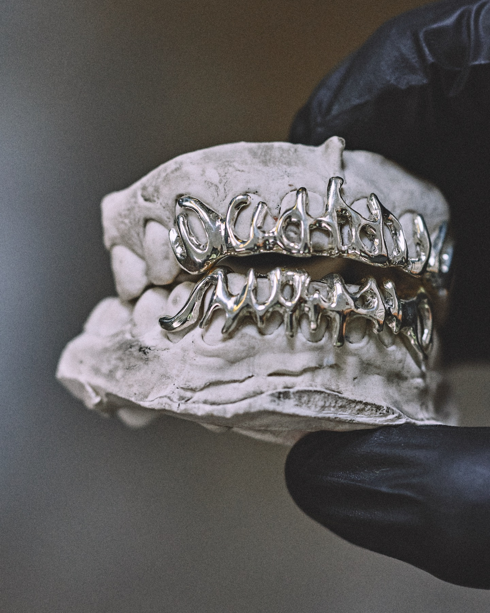

Fabriqué en Suisse
Précision horlogère appliquée à la joaillerie dentaire. Chaque pièce naît, vit et se finit dans notre atelier.
Savoir-faire & Histoire
Une maison née en 1978 dans la technique dentaire, élevée à l'exigence d'un atelier de joaillerie. Voici notre origine, nos gestes et nos matières.


Tout commence par une empreinte.
L'histoire commence en 1978 : la mère du fondateur entre dans la technique dentaire et bâtit un magnifique cabinet. Près de cinquante ans d'expertise de la dent — c'est ce socle qui garantit aujourd'hui le savoir-faire de chaque grillz.
Pendant des années, nos mains ont appris la bouche : ses reliefs, ses asymétries, son confort. Cette intimité-là ne s'improvise pas.
Le passage à la joaillerie fut une évidence. Appliquer à l'or et à l'argent la rigueur d'un geste technique : un ajustement parfait, sans compromis, sans douleur. Chaque pièce porte cette double exigence — celle du technicien-dentiste et celle du joaillier.

Technicien-dentiste de formation, joaillier par obsession.
Formé à la technique dentaire auprès de sa mère, dans le métier depuis 1978, le fondateur a passé quinze ans à comprendre la bouche — puis autant à apprendre à la sublimer. D'elle, il tient aussi le goût de l'esthétisme : des dents qui ont un vrai caractère, pas seulement des dents parfaites. C'est cette double culture, technique et joaillière, qui donne à chaque pièce son ajustement sans faille.
Il travaille seul, à l'établi, du premier moulage au dernier polissage. Aucune sous-traitance, aucune série : une pièce, une bouche, une signature.
La précision horlogère n'est pas un argument marketing : c'est une culture du dixième de millimètre, appliquée à votre sourire.
Précision horlogère appliquée à la joaillerie dentaire. Chaque pièce naît, vit et se finit dans notre atelier.
Un savoir-faire familial forgé dans la technique dentaire depuis 1978. Moulage professionnel, confort anatomique parfait.
Or 10K à 18K, argent 925, chrome-cobalt, diamants naturels et synthétiques. Une traçabilité totale, consignée sur votre certificat d'authenticité.

Faites défiler →

Poli miroir ou satiné. Le métal des premières pièces, accessible et noble.
Sterling certifié

Ici, une seule dent en or 18 carats sur une pièce en argent 925. L'or se décline du 10 aux 18 carats, jaune, blanc ou rose.
Poinçon suisse

Diamants naturels ou synthétiques, pierres diverses — posées et serties à la main.
Sertissage main

Croix, crocs, motifs sculptés : tous les designs particuliers sont possibles, dessinés avec vous.
Sur demande
Chaque pièce traverse le même établi, entre les mêmes mains, du métal brut à l'éclat final.
Le métal précieux est fondu puis coulé sur le modèle issu de votre empreinte. La matière prend sa première forme.
Motifs, reliefs et arêtes sont travaillés à la main, à la loupe. C'est ici que naît le caractère de la pièce.
Diamants et pierres sont posés un à un, chaque griffe resserrée à la main pour une tenue à toute épreuve.
Poli miroir, satiné ou brossé : la finition révèle le métal et signe le rendu final.